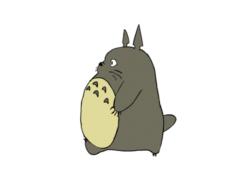
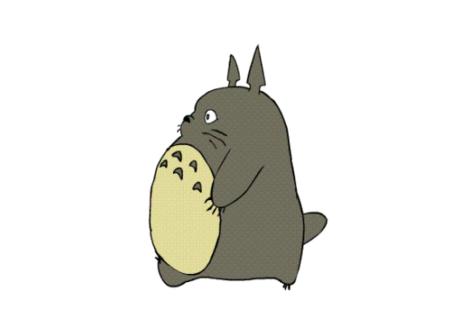

Anime or Japanese Animation
 Anime, style of animation popular in Japanese films. Early anime films were intended primarily for the Japanese market and, as such, employed many cultural references unique to Japan.
 Anime, style of animation popular in Japanese films. Early anime films were intended primarily for the Japanese market and, as such, employed many cultural references unique to Japan.